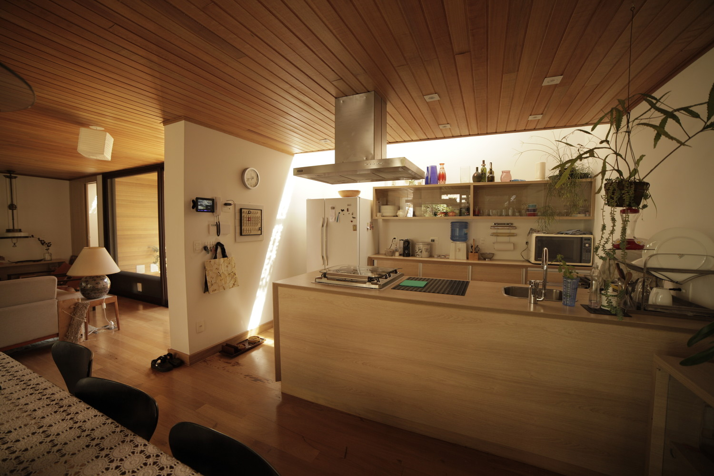

Pianta piano terra

Architects: Oficina de Arquitetura
Location: São Paulo, Brazil
Author Architect: Lêda Brandão
Area:160.0 m2
Project Year: 2016
Photographs: Lêda Brandão, Ana Roman
Manufacturers: Saint Gobain

Text description provided by the architects. Some major goals have guided us in the design process: to ensure a comfortable house, the continuous presence of nature, and flexible spaces to allow changes in the short and long term. Therefore, the patio (inner courtyard) house which appears in every culture seemed the best solution to meet all those conditions. The layout is a kind of quilt, mixing open and closed spaces.
A slightly asymmetric axis connects the spaces both horizontal and vertically. Thus we enter this integrated space through a patio that other than being a garden, reunites a vehicle shelter on one side, and the laundry on the other. From this patio, we access the first covered block that houses the living-room, the dining-room, and the kitchen, all of them distributed in a single though clearly zoned space.

Both rooms are sided by a patio full of plants, bushes, and small-scale trees, despite their rather small dimensions. Between the patios, a short hallway gives access to a multi-use room that accommodates the architect’s office, an area for space for drawing/ watercolor classes, and for yoga practice. The passage still makes room for the staircase that leads to the upper floor, where we find a library and the bedroom separated by a bathroom.

This simple space division allows its immediate flexible use. It also allows a future subdivision to conform a two-story block with three bedrooms, 2 bathrooms, and the library that might become a dressing room or an office. Related plumbing and drywalls were used to ensure and simplify the possible future changes.
Alternating open and closed spaces create a large visual expansion but at the same time, keeps a certain degree of privacy. This concept applies both to the spaces inside the house as well as to the relationship house-street. Despite being a glass house, people passing on the sidewalk do not see the inside.

All the openings of the house have been thought to create a balance between the outside and the inside, the thermal comfort, and the amount of light. As the primary concept was the presence of nature, we decided to use lots of glass. At the same time, in order to reinforce the contact between nature and comfort we believed it was essential plentiful natural light.
Thus, skylights were created over the kitchen, the toilet, the bathroom, and the library. They also guarantee the constant ventilation of the spaces. They are allies of plants and trees that with their shade, help to soften the entrance of heat that would otherwise be excessive, given the amount of glass on all the faces of the building.

Pianta piano terra

Pianta primo piano

Prospetto Sud

Prospetto Ovest

Sezione A-A
Prospettiva soggiorno
Prospettiva cucina
Prospetto materico